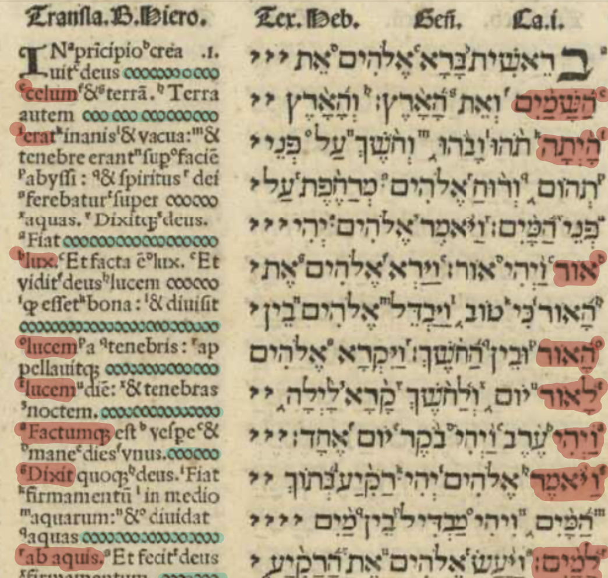
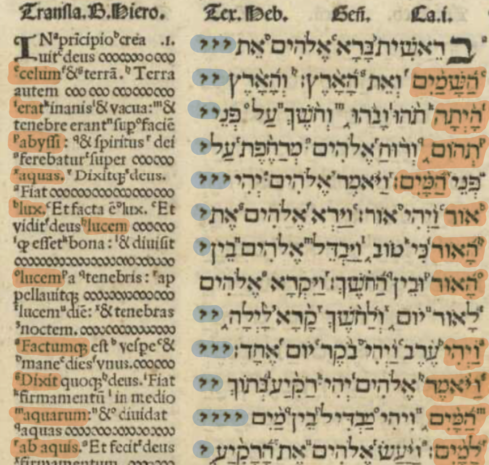

Multilingual reading: tour of a page
Images are linked to pannable/zoomable views.
Multilingual reading
- 4 languages: Pentateuch (Torah)
- 3 languages: remainder of OT (Prophets, Writings)
- 2 languages: NT
- 1 language with glossing
- 1 language: Prayer of Manasseh
| Four languages | Three languages | Two languages | One language (glossed) |
|---|---|---|---|
 Vol. 1, quire a, 1 recto |
 Vol. 2, quire a, 1 recto |
 Vol. 5, quire A, 1 recto |
 Vol. 4, quire F, 6 recto |
In addition, one language, no glosses:

Four texts
To illustrate how the Complutensian Bible supports multilingual reading, we can consider the opening of Genesis 1. In Volume 1, that is page 1 recto of quire a.
The texts of the Torah (published in volume 1) ilustrate the full range of the Complutensian’s four languages.
| Septuagint | Vulgate | Masoretic text |
|---|---|---|
 |
 |
 |
| Targum Onkelos | (Glosses) | |
 |
Keeping text aligned
Illustrations by Ashley Terjanian:
| Latin text | Hebrew text |
|---|---|
 |
 |


In vol. 4, the same spacing markers used in Greek that are used in Latin in vol. 1.
Glossing commentary: interlinear
Interlinear glosses on LXX

Glossing commentary: adjacent
Adjacent glosses (Targum Onkelos)

Glossing commentary via indexing, with lemmatization
Vulgate glossing Masoretic text
Example from Genesis 1. Glossing by indexing Vulgate to Hebrew, plus link to lemma
| Latin word | Hebrew word | lemma |
|---|---|---|
 |
 |
 |
The headword is the key to articles in the Hebrew lexicon in volume 6.

Concordance by sense:

Vulgate glossing Greek New Testament
Greek side: vol 5, quire A 1 recto. Can’t gloss Greek article!


More
See more info on contents and organization of volume 6, and example of navigation using the Biblical texts of volumes 1-4 with the reference material of volume 6.